Luana is the ninth hero that you will unlock at Stage 550. She is the second healer. Just like Benedictus, she attacks and heals.
Abilities
| Falling Star | |
|---|---|
| Toss 2 stars on your target. Each star deals 250% of your damage. Upon impact the energy of each star heals a random ally for 400% of your damage. Cost: 35 Mana | |
{kind=link}
| Nature's Favor | |
|---|---|
| Increases the armor of all heroes by 40% while healing them for 1.5% of their total health every second for 10 seconds. 40 seconds cooldown. Cost: 50 Mana. | |
{kind=link}
{kind=link}
Gear
| Weapon | Chest | Boots | Ring | |
|---|---|---|---|---|
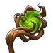 |
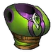 |
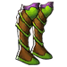 |
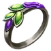 | |
| Wrist | Shoulder | Belt | Relic | |
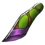 |
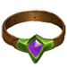 |
|||
| Ankh | Rune | Idol | ||
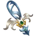 |
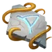 |
|||
| Talisman | Necklace | Trinket | ||
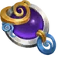 |
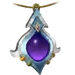 |
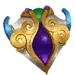 |
{kind=link}
{kind=link}
{kind=link}
{kind=link}
{kind=link}
{kind=link}
{kind=link}
{kind=link}
{kind=link}
{kind=link}
{kind=link}
{kind=link}
{kind=link}
{kind=link}
Story
The Ritualist
{kind=link}
{kind=link}
The ritualist
Anyone with knowledge of the Human Realm would say that the strangest settlement in the land was Salah, a multi-racial tribe of druids in the forest just outside of Talamer. Its residents were very spiritual, ignoring the troubles of the outside world. The sole purpose of their serene life was to find peace in service of the Light's spirit. Luana was one such resident, the daughter of the tribe Ritualist. As was customary, she accompanied her mother to other druid tribes in the settlement, to share in the rituals of other tribes and learn their mystic ways for preparation as the next Ritualist. Her mother always told her that the most important duty of the Ritualist was not any ritual, but to learn of other ways of life and respect them. The life druids followed allowed them to extend their life far beyond that of a Human, or even an Elf. Even a simple druid with no ambition to learn carried with him the experiences of many lifetimes. When the Undead first came to Alandria, they set their base of operations in what was once a lively forest, now known as Dreadland. They spread chaos and disease, draining the life out of every living thing they could corrupt with their vile necromancy. The rich wildlife was turned into a horde of undead monstrosities; trees lost their leaves and became gray and pale, attacking lost travellers with their twisted branches. Even the sun avoided casting its light on the Dreadland. Luana and the other druids of Salah were there to witness it, helpless while clinging to their peaceful ways. Luana begged her mother to begin the "Ancient Calling", a rite that could only be made once a century, to band every druid in the land together. Knowing she was committed to peace and that the new order of things called for fighting blood, her mother declared her withdrawal as Ritualist and her replacement as Luana. Knowing the old wisdom of the Ritualists, the Salah people joined Luana that same moment, binding their magic to hers. Holding hands together, Luana guided their spirits to share with her a vision. Druids across the land saw in their mind's eye the unliving plague of the Undead and the destruction of their serene community. Never a people to be hasty, it was decided to leave the decision to fight to the Druidic Council. The Elders of the Council could not see past their tradition. To them, the sacred course of life had to be left alone. Light and Darkness were two sides of the same coin, they said, and no matter what form life took, they would have to accept it. The Undead, even as servants of the Darkness and a danger for sure to other races, were not a threat to life as they formed part of the world and its balance. The other druids of the Salah and those around the world who had answered the Ancient Calling were quick to agree - they could not let go of their passive peace. Luana knew in her heart of hearts that the Undead were the ultimate weapon of the Darkness, the opposite of life, and would consume the Light to destroy the balance of everything.Alone, the Ritualist left her tribe to fight for life. Arriving at Irongard, and meeting the King, she explained to him the circumstances. It is believed that the King, knowing that to turn even a single Druid to war could only mean a threat graver than anything Humans had experienced before was at their doorstep, called for a rise to action. Joining his court and the battlefield, Luana became the first recruit in the war against the Darkness.
The Woodstock Survivor


{kind=link}
The Woodstock survivor
After the Ancient Calling, Luana joined a druidic mushroom BBQ and found herself in an alternate reality. Here, tales of undead, orcs, and demons were mere fantasies. She landed at a massive music festival near a town – Bertel? Verdelm? The name escaped her. She remained there for three days and even met a charismatic musician, Jim or Joe (again, the details a bit fuzzy) among the crowd. Inspired by this peaceful realm, Luana returned, convinced that her own world could also embrace a life of love and serenity.
The Grove Guardian


{kind=link}
The grove guardian
When the undead were driven from the forest, nothing celebrated their absence. The trees remained standing, but their spirits were quiet. Bone and branch lay where life had been interrupted, not destroyed - waiting, uncertain, whether it would be allowed to continue. Luana answered that question by staying. She reforged her armor from the remains of the grove itself: pale bone shaped by druidic rites, bound with living fiber and memory. Not as a trophy of death, but as a vow - that what had been taken would not be forgotten, and what endured would not be wasted. Petals fall wherever she walks, not as a sign of bloom, but of watchfulness. The forest does not rise behind her yet. It rests. Luana does not command growth.She guards the pause between endings and beginnings. Until the land is ready to breathe again, she stands as its guardian.
Dialogue
Before unlocking:
- Benedictus: What kind of sorcery is that? There are 2 moons on the sky.
- Aurelia: It's a blue and a red one. I have heard about this phenomenon again but i thought it was just a fairytale.
- Benedictus: The energy on the air is tremendous.
After unlocking:
- Luana: Go back to where you came from demons! Die!!
- <Energy beams slicing through the air, killing demons>
- <Silence follows>
- Aurelia: What is going on, who you were fighting?
- Luana: Some demons thought that they could kill me, i sent them back to where they belong.
- Aurelia: Nobody will miss them. What is your mission anyway?
- Luana: I was searching for you, by the king's command. It took me days to find you.
- Aurelia: Are we needed back to the capital?
- Luana: No no. Let me explain.
- Luana: I am Luana, the ritualist. I am king's first recruit in the war against the darkness.
- Luana: When you began your adventure i was on a mission near the Dark Caverns, so when i returned to Irongard, the king ordered me to find you and join you.
- Aurelia: It's our pleasure to meet you Luana. Someone as powerful as you will certainly help us on this mission!